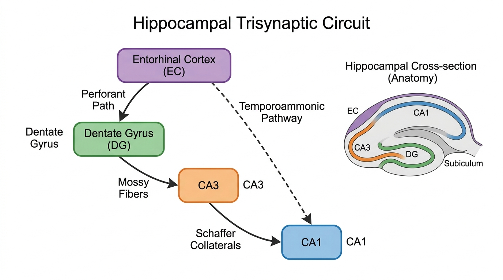
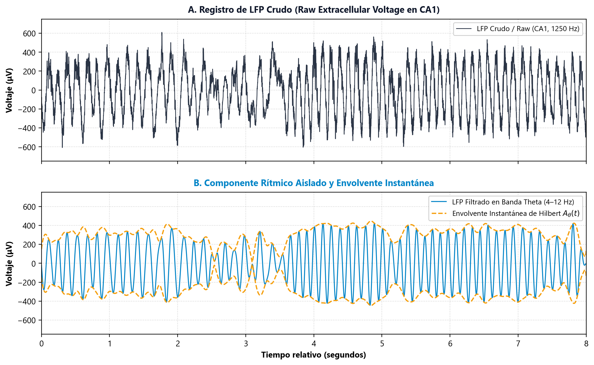
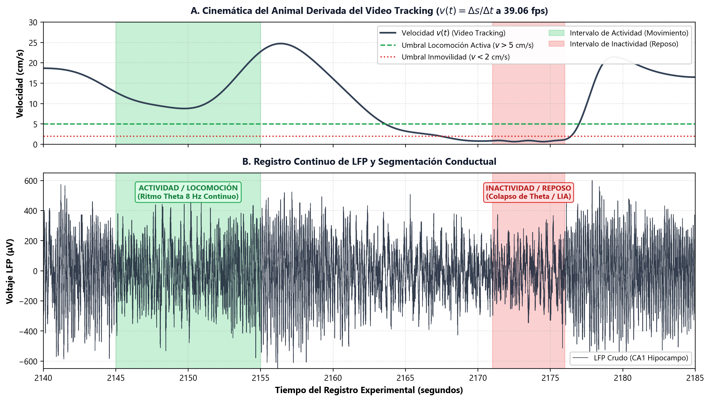
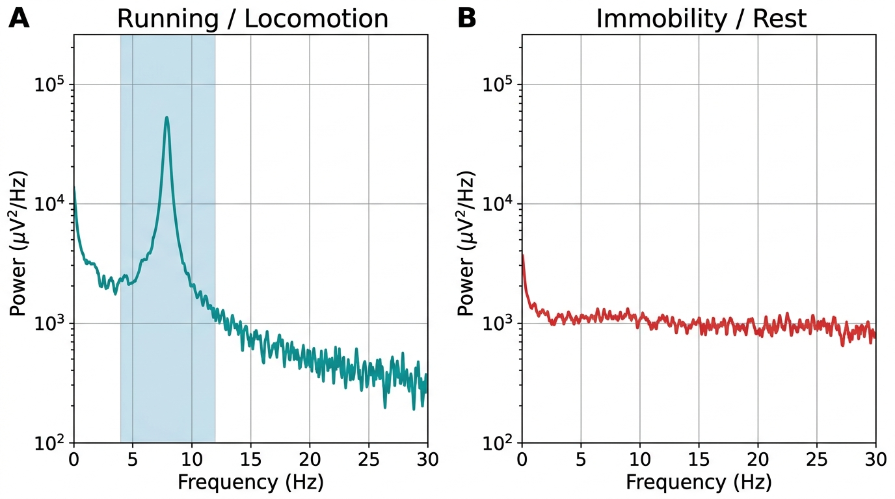
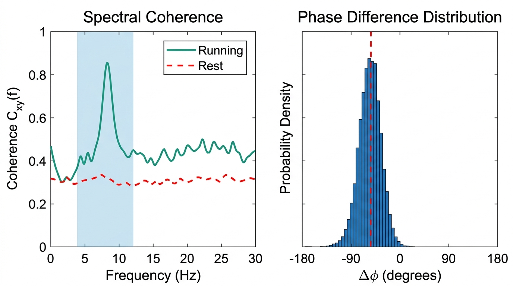

Trabajo Final — Procesamiento Digital de Señales
Análisis de Local Field Potential en Ratas Comportándose Libremente
Parte 1 · Modulación Conductual del Ritmo Theta │ Parte 2 · Sincronización CA1–CA3
Parte 1
Emergencia del Ritmo Theta en Exploración
Oscilación cuasi-sinusoidal de gran amplitud en la banda Theta (4–12 Hz) que aparece exclusivamente durante la locomoción activa del animal.
Parte 2
Sincronización Funcional CA1 – CA3
Coherencia espectral $C_{xy}(f)$ y acoplamiento de fase $\Delta \phi$ entre subregiones del hipocampo durante el ritmo Theta.
Dataset: CRCNS hc-3 · Rata Long-Evans
ec013 · Registro multicanal a 1250 Hz
· Autor: Tomás
Marco Teórico: El Circuito Hipocampal
Circuito trisináptico, ritmo Theta y estados conductuales del hipocampo
Circuito Trisináptico
Flujo de Información en el Hipocampo
- Vía Perforante: Corteza Entorrinal (EC) $\rightarrow$ Giro Dentado (GD)
- Fibras Musgosas: GD $\rightarrow$ CA3
- Colaterales de Schaffer: CA3 $\rightarrow$ CA1 (2–5 ms)
- Bucle Completo: EC $\rightarrow$ GD $\rightarrow$ CA3 $\rightarrow$ CA1 (12–20 ms)
Premisa Central
Postulado de Vanderwolf (1969)
- El LFP del hipocampo transiciona a una oscilación regular a ~8 Hz exclusivamente durante la locomoción voluntaria.
- En reposo o inmovilidad, la oscilación Theta desaparece y es reemplazada por actividad irregular (LIA).

Figura 1. Esquema del circuito trisináptico hipocampal: EC $\rightarrow$ GD $\rightarrow$ CA3 $\rightarrow$ CA1. La vía témporo-amónica directa (EC $\rightarrow$ CA1) opera en paralelo.
Registro del Local Field Potential (LFP)
Adquisición multicanal con sondas de silicio y extracción de la banda Theta
Señal Cruda
¿Qué es el LFP?
- Voltaje Extracelular: Suma sincrónica de potenciales postsinápticos en miles de neuronas piramidales.
- Adquisición: Sondas de silicio multicanal a $f_s = 1250\text{ Hz}$ (ancho de banda 1–625 Hz).
Pipeline PDS
Extracción de la Banda Theta
- Filtro Butterworth: Pasa-banda 4–12 Hz, fase cero (
filtfilt, orden 3). - Envolvente de Hilbert: Amplitud instantánea $A_\theta(t) = |\mathcal{H}\{x_\theta(t)\}|$.
- PSD de Welch: Ventana de 1.5 s con 50% de solapamiento para densidad espectral.

Figura 2. Panel A: LFP crudo sin filtrar ($f_s = 1250\text{ Hz}$). Panel B: Componente filtrado en la banda Theta (4–12 Hz) y envolvente de Hilbert $A_\theta(t)$ (línea punteada).
Segmentación de Estados Conductuales
Velocidad instantánea derivada del video tracking y clasificación de intervalos
Cinemática
Tracking de Video Cenital
- Cámara cenital a 39.06 fps siguiendo LEDs en la cabeza del animal.
- Velocidad instantánea: $v(t) = \frac{\sqrt{\Delta x^2 + \Delta y^2}}{\Delta t}$
Criterios de Clasificación
Umbrales Conductuales
- Actividad (Verde): Intervalos con $v(t) > 5\text{ cm/s}$ sostenidos.
- Inactividad (Rojo): Intervalos con $v(t) < 2\text{ cm/s}$ (pausas, descanso).

Figura 3. A: Velocidad instantánea $v(t)$ con umbrales conductuales. B: LFP continuo con intervalos de Actividad y Inactividad superpuestos.
Parte 1: Emergencia del Ritmo Theta
Contraste temporal y espectral entre locomoción activa e inmovilidad
Locomoción Activa
Oscilación Theta Presente
- Onda cuasi-sinusoidal regular a $8.3\text{ Hz}$ con $V_{p-p} > 700\,\mu\text{V}$.
- PSD: Pico dominante con $40{,}304\,\mu\text{V}^2/\text{Hz}$ ($>80\%$ de la energía espectral).
Inmovilidad / Reposo
Colapso Total de Theta
- Señal asincrónica de bajo voltaje (Large Irregular Activity, LIA).
- Potencia a 8 Hz cae a $1{,}228\,\mu\text{V}^2/\text{Hz}$ — atenuación de $32.8\times$.

Figura 4. Densidad Espectral de Potencia (PSD): prominente pico Theta durante la locomoción (izq.) que desaparece completamente en reposo (der.).
Parte 2: Sincronización CA1 – CA3
Coherencia espectral, acoplamiento de fase y retardo del circuito trisináptico
Coherencia Espectral
$C_{xy}(f)$ — Correlación por Frecuencia
- Exploración: $C_{xy} = 0.865$ en 8 Hz ($>85\%$ de sincronización).
- Reposo: Coherencia colapsa a $C_{xy} = 0.29$ (desacoplamiento).
Desfase de Fase
Retardo Trisináptico ($\Delta t \approx 15\text{ ms}$)
- $\Delta \phi \approx -58.6^\circ$: Distribución unimodal estrecha (no aleatoria).
- Schaffer Directo: Solo 2–5 ms. El desfase de 15 ms refleja el bucle completo EC $\rightarrow$ GD $\rightarrow$ CA3 $\rightarrow$ CA1 (Mizuseki et al., 2009).

Figura 5. Izq: Coherencia espectral $C_{xy}(f)$ con pico en 8 Hz durante locomoción. Der: Histograma de $\Delta \phi$ centrado en $-58.6^\circ$.
Conclusiones
Síntesis de los resultados del análisis de procesamiento digital de señales
Resultado 1
Modulación Conductual del Ritmo Theta
- La oscilación Theta ($8.3\text{ Hz}$) emerge exclusivamente durante la locomoción activa ($v > 5\text{ cm/s}$), confirmando el postulado clásico de Vanderwolf (1969).
- En inmovilidad, la densidad espectral se reduce en un factor de $32.8\times$, siendo reemplazada por actividad irregular asincrónica (LIA).
Resultado 2
Sincronización Inter-Regional CA1 – CA3
- Durante la exploración, CA1 y CA3 presentan alta coherencia espectral ($C_{xy} = 0.865$) en la banda Theta, indicando un fuerte acoplamiento funcional.
- El desfase macroscópico de $\Delta t \approx 15\text{ ms}$ ($\Delta \phi \approx -58.6^\circ$) coincide con la ventana temporal del circuito trisináptico completo (Mizuseki et al., 2009, Neuron).
Referencia Principal: Mizuseki K, Sirota A, Pastalkova E, Buzsáki G. Theta oscillations provide temporal windows for local circuit computation in the entorhinal-hippocampal loop. Neuron, 2009; 64(2):267–280.